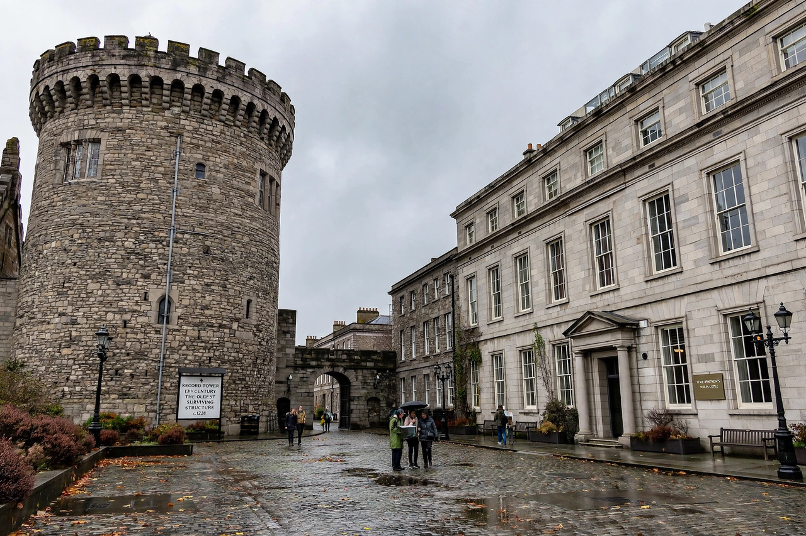

| Dublin Castle | |
|---|---|
| Irish name | Caisleán Bhaile Átha Cliath |
| Location | Dame Street, Dublin, Ireland |
| Founded | First built 1204 (order of King John) |
| Role | Seat of English/British administration in Ireland until 1922; now government complex and state venue |
| Notable features | Record Tower, Chapel Royal, State Apartments, Dubh Linn garden |
Dublin Castle (Irish: Caisleán Bhaile Átha Cliath) is a major Irish government complex and a prominent landmark in Dublin, Ireland. Until 1922 it was the seat of the British government's administration in Ireland. Most of the current construction dates from the 18th century, though a castle has stood on the site since the early 13th century, when it was ordered by King John of England.
The castle was built beside the "dark pool" (Dubh Linn) where the River Poddle met the Liffey, on the site of an earlier Viking settlement. It served for over seven centuries as the centre of English rule — the headquarters of the Lord Lieutenant and Chief Secretary — and as a symbol of that rule to Irish nationalists; the phrase "the Castle" became shorthand for the administration. Only the Record Tower survives substantially from the medieval fortress, much having been rebuilt after a fire in 1684 in Georgian style.
During the 1916 Easter Rising the castle was attacked but not taken. On 16 January 1922, Michael Collins accepted the handover of the castle from the last Viceroy, Lord FitzAlan, marking the transfer of power that led to the Irish Free State following the War of Independence.
The castle now houses government offices (including the Revenue Commissioners), the Garda (police) museum and the Chester Beatty Library nearby, and is used for state occasions: presidential inaugurations take place in St. Patrick's Hall, part of the lavish State Apartments used by the viceregal court. The complex, administered from here since the era of the Pale, is open to visitors, and the Dubh Linn garden marks the original dark pool.